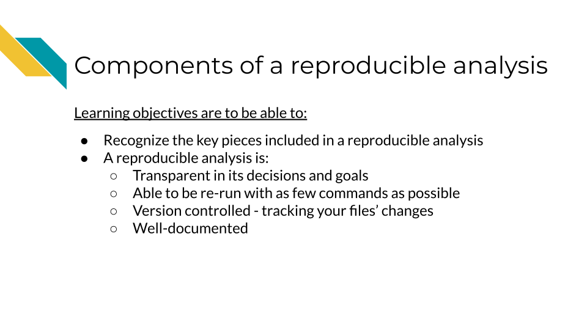
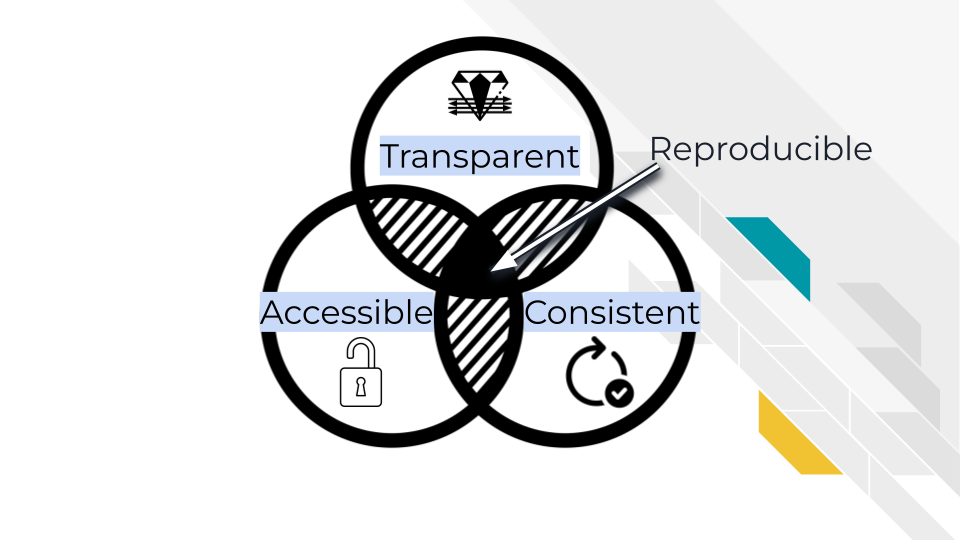
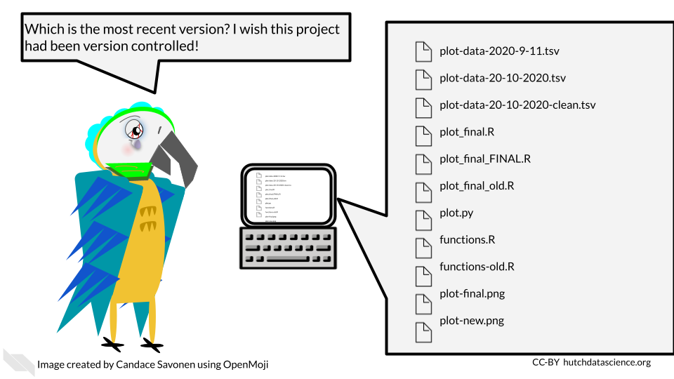

Chapter 3 Components of a reproducible analysis
In this chapter, we will discuss what components of an analysis make it reproducible.

3.1 Reproducibility is iterative work
Making an analysis isn’t something that happens on the first try. Working on a project iteratively and continuing to improve the reproducibility of it is the best approach. In this manner, we can view reproducibility on a continuum. Some projects are just run once but aren’t really needed anymore, and don’t become very polished or reproducible. But as we continue to work on a project and polish its reproducible components, it continues to be more perfected. However, because of the moving nature of some reproducibility components, no project is really perfectly reproducible in every context throughout time.
![Reproducibility is on a continuum. This graph shows a two sided arrow with a gradient. On the very left is a ‘not repeatable analysis’ it was ran once. To the right of that is an analysis that ‘re-runs sometimes’. To the right of this, is an analysis that ‘Re-runs reliably in most contexts’. And all the way to the right is a ‘perfectly reproducible analysis’ that ‘Re-runs in every situation and gets the same result every time’. In red lettering we note that every analysis is started by being run once but no analysis is ‘perfectly reproducible’.](resources/images/03-components_files/figure-html/1MNHf8JpolaEP_vQ_kB-1xRBF9wo3haCArRu117hBoHA_g21a84b32106_0_23.png)
3.2 Components of reproducibility
A reproducible analysis is transparent, consistent, and accessible.
- Transparency refers to the idea that it is well communicated and everything is displayed: data, code, goals, methods, and decisions. There are no secrets in a reproducible analysis/
- Consistency refers to the idea that the code can be consistently run, but also everything follows a particular system, conventions and design.
- Accessibility refers to the idea that anyone anywhere should be able to run and/or examine the analysis. No pay walls or expensive software should be required.

3.3 Transparent
One essential piece of a reproducible analysis is that the code runs reliably. However, to really make an analysis reproducible, the decisions made in the analysis should also be clearly communicated. A transparent analysis is not only well communicated, but also shared publicly in a way that others can comment and contribute ideas and suggestions to or borrow methods and strategies for their own analyses.
3.3.1 Open source
Open source means not only making code and data publicly available, but also enabling others to modify or comment on the code. This doesn’t mean that any and all modifying contributions need to be accepted, because some level of standards and quality checks need to be maintained by the owners of the analysis, but just that anyone online could propose a contribution if they wanted to.
For an analysis to be truly open source, it needs to be easily accessed by others and stored online. Code that can be emailed, for example, is not considered open source.

For reproducibility, keeping your code on GitHub is a great open source solution. GitHub is a code hosting platform that allows people to access code and sometimes data. It is commonly used, and has a built in system that allows others to contribute changes in a way that can be methodically reviewed by you (this is called the pull request system and we will talk about it more).
GitHub - An online platform for sharing and managing code and files in an open source manner
3.3.2 Data is publicly available
A transparent analysis has data that is publicly shared so that others can re-run the analysis as you have. Data should be provided in a way that it can be programmatically accessed (downloaded by a script). Data also need to be well-documented in the form of metadata.
Data sharing is a critical piece for promoting the open sourceness of your analysis, however this often needs to be balanced with privacy if you work with human data or samples. These data will likely contain personal identifiable information (PII) and protected health information (PHI). For more details on this, we encourage you to see this course about data management.
While it’s imperative that you protect human data, that doesn’t mean that your analysis cannot be publicly shared! These are not mutually exclusive goals, but will take a bit of thoughtful planning. In the upcoming chapters we will provide additional ideas and information for how you can conduct an open source analysis while appropriately protecting sensitive data.
3.3.3 Readable code
Readable code is much more important than clever code. If you are the only one who knows what your code is doing, it will not only be difficult for others to contribute or vet your analysis, but in the future, you will probably not understand what your code is doing either.
Read this course chapter from the ITCR training network about how to write durable code.
3.3.4 Well-documented
A well-documented analysis is a reproducible analysis. If analyses didn’t require a lot of decisions and human comprehension than documentation wouldn’t be necessary – but also a lot of data analysts would be out of a job because robots would be able to do it! Analysts and developers often think of documentation as an after-thought, but good documentation should be actively developed along with the code. Arguably, it is more important to have clear documentation than even working code, because if broken code is well-documented, others may be able to help make suggestions for how it can be fixed.
Good documentation not only describes what happened in an analysis, but why it happened – why did the analyst choose this method or parameter as opposed to others? Was there an additional analysis, literature, or other resource that led us to this conclusion? Documentation should describe not only what is happening, but the thought process that led us here.
3.3.5 Version controlled
A reproducible analysis is a version controlled analysis. Analyses go through many iterations, side quests, and occasional dead ends – and this is okay, it is how data science works! – but if not done properly with version control, this can lead to an unruly code base and a lot of confused team members. Version control is a method for tracking changes to files in a systematic manner. One such method of version control is called git and we will talk about how to use git and its online website GitHub, in a future chapter.
Version control helps maintain the history of your project in a way that will allow you to recover old versions if necessary, or otherwise have documentation on what has happened. It can also be useful for rectifying different versions of a code base between team members.

version control - A method of tracking and handling files as they are changed over the course of a project
3.4 Consistent
A reproducible analysis is consistent. It should consistently run and consistently produce the same results. It should also be written in a manner that follows a consistent style and project organization scheme.
3.4.1 Re-runs consistently and easily
Ideally, a reproducible analysis should be able to re-run with one command that is explicitly stated in a README file. This is a file that explains what all the rest of the files are and the point of the project. If an individual has a copy of the analysis project, it should include everything that is needed to re-run that analysis and the number of steps needed to re-run the analysis should be the lowest number possible. The more steps that are needed, the less likely it will be that someone will be able to reproduce the analysis.
This also generally means that analyses that can be performed through programmatic scripts are more reproducible than those performed by GUI’s (graphic user interfaces). GUIs are programs on computers that are used by pointing and clicking buttons whereas command line programs are used by typing in commands. Command line programs generally take scripts that allow you to have each step written in the script which can be easily recalled to re-run the entire analysis. Most GUI’s, although sometimes more intuitive to use, are unfortunately less reproducible because they require more manual steps by clicking various buttons.
GUI (graphic user interface) - A type of program on a computer that you use by pointing and clicking with a mouse Command line - A type of program on a computer that you use by typing in commands or writing scripts that can be run
3.4.2 Follows a code style
Code style is important because it not only makes code more readable, but it also lends a certain confidence to the reader of the code, that this code has been thought through and perhaps polished more than code that is less consistent in its style.
3.4.3 Have an organizational scheme
Project organization is a major component of reproducibility. If you are not able to find your files, then chances are individuals who are attempting to reproduce your analysis also will not be able to understand where to find things. We will discuss in a later chapter strategies for keeping projects organized, while realizing that project organization is an ongoing, dynamic task.
3.5 Accessible
We discussed that we use R because it is open source and free. This makes it conducive for making reproducible analyses. Accessibility is important for reproducibility. This means minimizing the number of hoops others have to jump through to re-run your analysis.
Accessibility also involves prioritizing democratizing science and enabling as many people as possible to understand what you did for your analyses. We encourage you to realize that science does best when everyone has access to it and that includes code and data analyses! Making your data and code accessible, allows everyone to contribute and learn from your analysis. Note that if you are concerned about being scooped, you can make your code private on GitHub while you are working on it and then make it public once you release a preprint of your results. We will talk more about this later.
Accessibility means that anyone should be able to access it – whether or not their funding is in ample supply. So be sure to publish in code repositories that do not require membership fees or any other kinds of paywalls. Make an effort to publish in journals that are freely available as well.
Sometimes even if something is accessible in that it is “free” monetarily it doesn’t mean that it is free in the sense of the amount of time it takes to access it. If your code and data does need some sort of controlled access features for privacy and ethical concerns of protecting data, make sure that the paperwork hoops that are put in place are truly there in the spirit of protecting the data and not instead to keep data and code hidden from others.
3.6 Conclusion
In this chapter, we gave a high level overview of reproducible analyses. We discussed that reproducible analyses are transparent, consistent, and accessible. This means in practical terms, reproducible analyses:
- Are open source
- Have data that is publicly available (when appropriate)
- Have readable code
- Are well-documented
- Re-run easily
- Have an organizational scheme
- Follow a code style
- Do not have paywalls or other barriers (except for ethical or data privacy reasons)